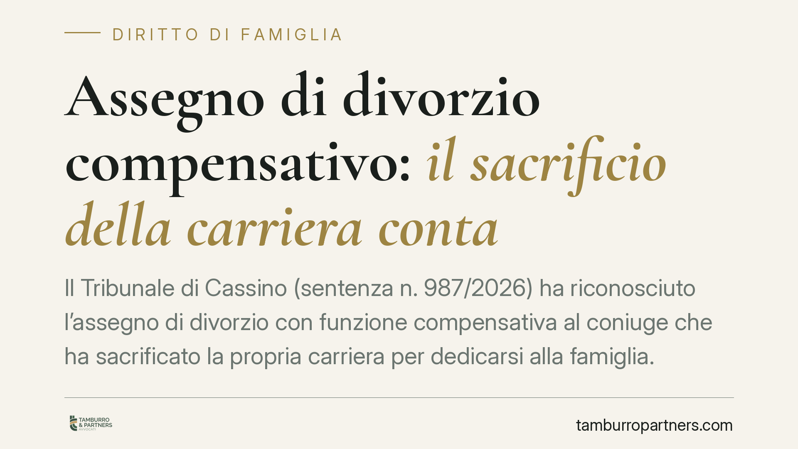

Assegno di divorzio compensativo: il sacrificio della carriera conta
Il Tribunale di Cassino (sentenza n. 987/2026) ha riconosciuto l'assegno di divorzio con funzione compensativa al coniuge che ha sacrificato la propria carriera per dedicarsi alla famiglia. La decisione conferma un principio ormai consolidato: non serve lo stato di bisogno per ottenere il contributo, ma la prova del sacrificio professionale e del suo peso sul matrimonio.

Il caso deciso dal Tribunale di Cassino
Un coniuge aveva rinunciato, durante il matrimonio, a sviluppare la propria attività professionale per occuparsi della gestione domestica e della crescita dei figli. Al momento del divorzio chiedeva il riconoscimento dell'assegno, pur non versando in condizioni di indigenza.
Il Tribunale ha accolto la domanda, valorizzando la cosiddetta funzione compensativa dell'assegno: il contributo serve a riequilibrare le conseguenze economiche di scelte condivise durante la vita matrimoniale, non solo a sostenere chi si trova in difficoltà.
Inquadramento normativo
La base resta l'art. 5, comma 6, della Legge n. 898/1970 (legge sul divorzio). La norma prevede che il giudice disponga l'assegno tenendo conto delle condizioni dei coniugi, delle ragioni della decisione, del contributo personale ed economico dato da ciascuno alla conduzione familiare e alla formazione del patrimonio comune, valutando tutti questi elementi anche in rapporto alla durata del matrimonio.
La svolta interpretativa risale alle Sezioni Unite della Cassazione (sentenza n. 18287/2018), che hanno superato il vecchio criterio del "tenore di vita" matrimoniale. Oggi l'assegno ha natura assistenziale, compensativa e perequativa insieme. La componente compensativa riconosce il valore delle rinunce professionali compiute da un coniuge nell'interesse della famiglia, a vantaggio anche del percorso lavorativo dell'altro.
Il passaggio chiave è questo: non occorre dimostrare uno stato di povertà. Occorre dimostrare che una scelta condivisa — dedicarsi alla famiglia anziché alla carriera — ha prodotto uno squilibrio economico destinato a protrarsi dopo il divorzio.
Cosa cambia per chi divorzia
La sentenza di Cassino non introduce regole nuove, ma applica in modo rigoroso un principio che incide molto sulla concreta quantificazione dell'assegno.
Per il coniuge richiedente significa che la rinuncia alla carriera non è un dato irrilevante o puramente affettivo: è una circostanza giuridicamente apprezzabile, purché documentata. Non basta affermare di aver "fatto la casalinga" o di aver "messo da parte il lavoro". Serve ricostruire concretamente quali opportunità professionali siano state abbandonate e quale fosse il potenziale reddituale sacrificato.
Per il coniuge obbligato cambia la prospettiva difensiva. Non è più sufficiente dimostrare che l'ex partner "potrebbe lavorare" o "non è povero". Occorre contestare il nesso tra le scelte matrimoniali e lo squilibrio economico, dimostrando ad esempio che la rinuncia non c'è stata, oppure che non ha inciso in modo significativo.
Resta centrale il tema della prova. La componente compensativa vive o muore sulla documentazione: titoli di studio, percorsi professionali interrotti, offerte di lavoro rifiutate, redditi dell'altro coniuge cresciuti proprio grazie alla divisione dei ruoli.
Cosa fare in concreto
- Ricostruisci la storia professionale del matrimonio. Raccogli diplomi, lauree, contratti, buste paga precedenti e ogni elemento che documenti la carriera avviata e poi interrotta.
- Documenta le scelte condivise. Conserva prove — anche testimoniali — del fatto che la rinuncia fu una decisione presa nell'interesse comune della famiglia, non una scelta unilaterale o un disinteresse al lavoro.
- Collega il sacrificio al vantaggio dell'altro coniuge. Se la divisione dei ruoli ha permesso all'ex partner di crescere professionalmente, evidenzia questo nesso: è il cuore della funzione compensativa.
- Quantifica lo squilibrio attuale. Confronta le rispettive condizioni economiche presenti e prospettiche; l'assegno compensativo mira a riequilibrare, non a parificare i redditi.
- Rivolgiti a un professionista prima di impostare la domanda. La differenza tra un assegno riconosciuto e uno negato spesso sta nella costruzione probatoria iniziale. Consigliamo di preparare la documentazione prima del deposito del ricorso.
Un principio in evoluzione
La sentenza di Cassino conferma una tendenza che riconosce valore giuridico al lavoro di cura. Il matrimonio viene letto come progetto in cui le rinunce di uno producono effetti patrimoniali duraturi: ignorarle al momento del divorzio sarebbe una penalizzazione ingiusta.
Resta però una decisione di merito, legata alle prove del caso concreto. Ogni situazione va valutata singolarmente, perché l'esito dipende dalla capacità di documentare il sacrificio e il suo peso effettivo.
---
*Contributo informativo a cura di Tamburro & Partners - Avv. Giuseppe Tamburro. Non costituisce parere legale.*
Ogni famiglia ha il suo equilibrio.
Separazione, divorzio, affidamento, assegno: se vuoi un confronto riservato su una specifica situazione, scrivi allo studio. Ti rispondiamo entro un giorno lavorativo.